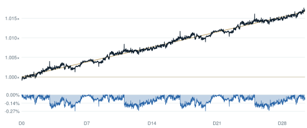
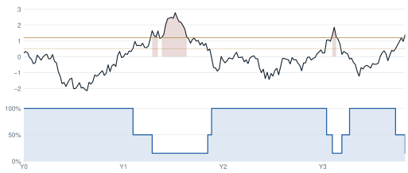

Selected work · anonymised
Systematic strategies and risk frameworks
for digital asset markets.
Five years designing market-neutral strategies, portfolio risk systems and macro regime models across DeFi derivatives, lending and structured yield. Mathematics & Physics, University of Bristol. CFA candidate. Remote, CET.
Strategy
Delta-neutral funding capture
Market-neutral carry, systematically hedged. Method shown at abstraction level.

The strategy captures perpetual funding while holding net market exposure near zero, with position sizing governed by liquidation distance, venue liquidity and funding persistence rather than point-in-time yield. Risk rules dominate entry logic: exposure contracts automatically as regime stress rises, and every venue carries an independent exposure ceiling.
Metrics measured over a 30-day live sample; short-sample ratios overstate long-horizon expectations. Implementation detail, venues, parameters and execution logic are not disclosed.
Risk & Allocation
Macro regime framework
Cross-market stress composite governing digital asset allocation.

A composite of bond volatility (MOVE), credit spreads (HY/IG) and term premia, normalised into a single stress score. Crossing calibrated thresholds moves the digital asset sleeve between full, reduced and defensive tiers, with hysteresis to avoid whipsaw at the boundary. The premise is simple: crypto drawdowns cluster in global liquidity contractions, and fixed income sees them first.
Research Systems
LLM-assisted research pipeline
Structured opportunity extraction across 1,000+ protocols. Sample output, anonymised.
| Opportunity | Category | Est. net yield | Flags raised | Score |
|---|---|---|---|---|
| Protocol A — stable lending loop | Lending | 8.2% | Oracle dependency | 7.4 |
| Protocol B — basis, quarterly | Derivatives | 11.6% | Thin venue depth | 6.9 |
| Protocol C — LP, hedged | Liquidity | 9.8% | Incentive decay | 6.1 |
| Protocol D — structured yield | Structured | 14.3% | Unaudited module · rejected | 2.8 |
Sample of pipeline output, March 2026 snapshot. Protocol names withheld; figures rounded.
Local and cloud models run structured extraction over documentation, audits and on-chain data, producing typed records rather than prose. Hard risk filters reject before scoring ranks; a human reviews everything above threshold. The pipeline shortens the distance between a protocol existing and a decision existing.